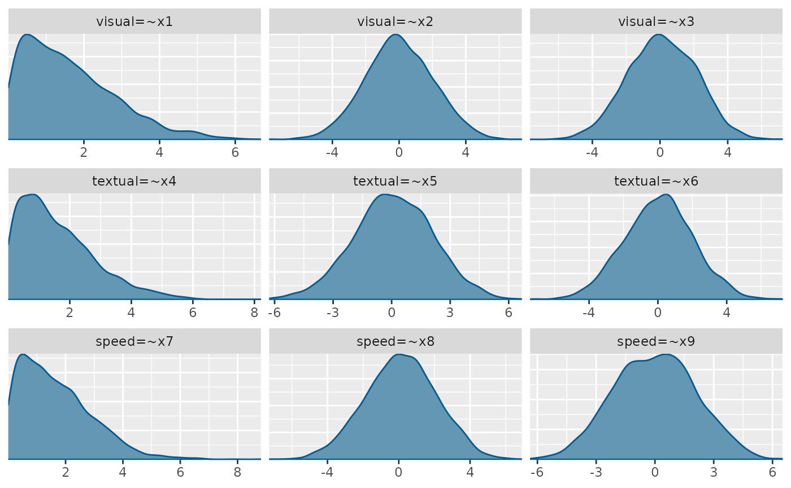
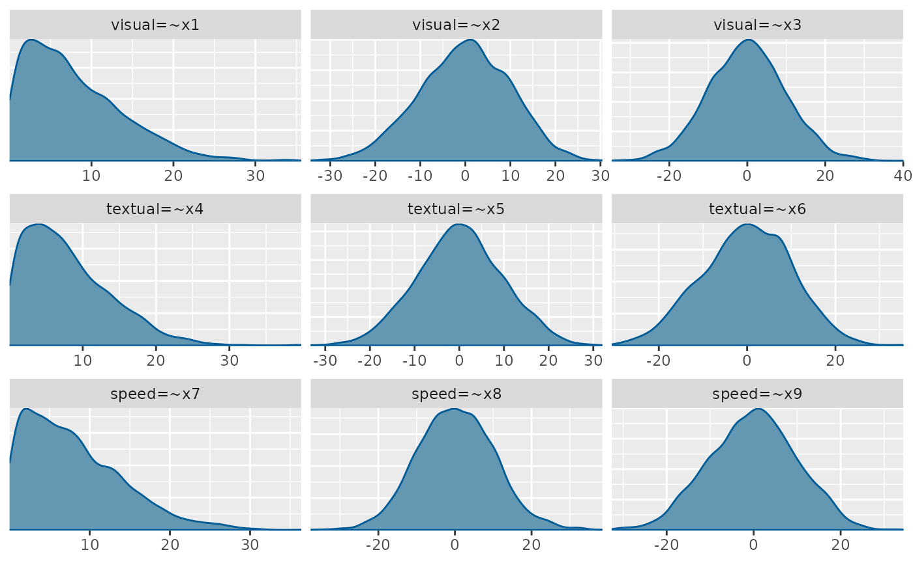

Prior Predictive Checks
Mauricio Garnier-Villarreal
Source:vignettes/prior_pred_checks.Rmd
prior_pred_checks.RmdIntroduction
In Bayesian models we need to specify priors for the model parameters. Priors are the distribution that we think the parameters would follow, even before having data. These can represent high or low uncertainty, so that a diffuse prior indicates that we don not know a lot about how the parameter would behave, while an informative prior means that we are quite certain about the expected distribution.
Prior Predictive Checks
Prior predictive checks (PPC) generate data according to the prior in order to asses whether a prior is appropriate (Gabry et al. 2019). A posterior predictive check generates replicated data according to the posterior predictive distribution. In contrast, the prior predictive check generates data according to the prior predictive distribution .
The prior predictive distribution is just like the posterior predictive distribution with no observed data, so that a prior predictive check is nothing more than the limiting case of a posterior predictive check with no data.
This is easy to carry out mechanically by simulating parameters according to the priors, then simulating data according to the sampling distribution given the simulated parameters. The result is a simulation from the joint distribution, and thus is a simulation from the prior predictive distribution.
In blavaan we can get PPC when we use the argument
prisamp=TRUE , this will tell blavaan to ignore the data
and build distributions only from the priors. Here we will start by
adjusting the priors, instead of using the default priors.
Weakly informative priors
We will show an example with the Holzinger and Swineford (1939) data, first a case with weakly informative priors. Here we are stpecifying that the observeded variable intercepts will have a prior of , the factor loadings will have a prior of , and the residual standard deviation with a prior of .
priors <- dpriors(nu="normal(3,2)",
lambda="normal(0.4, 2)",
theta="gamma(1,1)[sd]")Then we estimate the BSEM model with the respective priors on the
dp argument, and with prisamp=TRUE, so getting
PPC instead of posterior distributions.
HS.model <- ' visual =~ x1 + x2 + x3
textual =~ x4 + x5 + x6
speed =~ x7 + x8 + x9 '
fit_wi <- bcfa(HS.model, data=HolzingerSwineford1939,
std.lv=TRUE, meanstructure=T, test = "none",
dp=priors, prisamp = T)You might get some warning messages from either divergent and/or failed convergence. For this we would ignore these messages as it is likely to have issues for the evaluations of prior predictions.
We now have a blavaan object with prior predictive
distributions, so we can use any of the package functions to describe
them, and see if the parameters are within expected ranges. For example
we can get the PPC density distributions for the first 9 parameters
(factor loadings in this case). The basic plot() method
calls the functions from the bayesplot package (Gabry and Mahr 2021) and with the
plot.type = "dens" argument we can plot the density
distributions
plot(fit_wi, pars=1:9, plot.type = "dens")
You can also pick which parameters to plot, like the factor
correlations by chossing parameters 19:21 in this case
plot(fit_wi, pars=19:21, plot.type = "dens")
From the factor loading distributions we see that the first loading on each factor is bounded by 0, this is due to a modeling identification constraint in blavaan, and with a maximum value around 6. And for all other distributions they range between -6 to 6 or -4 to 4, and for all priors the most likely value is around 0. This would be described as weakly informative as it allows negative and positive values but without allowing crazy high/low values.
What would be a realistic range would depend on the parameter, model specification, and data. So, consider these priors in function of those characteristics.
For the factor correlations we kept the default diffuse priors, so these allowed very high and low correlation, but the prior distributions are not flat across all possible correlation values.
Default priors
In this next example, we will estimate the PPC with the package
default priors, that would consider diffuse priors. You can see the
blavaan default priors with the function dpriors()
dpriors()## nu alpha lambda beta
## "normal(0,32)" "normal(0,10)" "normal(0,10)" "normal(0,10)"
## theta psi rho ibpsi
## "gamma(1,.5)[sd]" "gamma(1,.5)[sd]" "beta(1,1)" "wishart(3,iden)"
## tau
## "normal(0,1.5)"Then we estimate the BSEM model and ignore the dp
argument letting run with the default priors, and with
prisamp=TRUE, so getting PPC instead of posterior
distributions.
fit_df <- bcfa(HS.model, data=HolzingerSwineford1939,
std.lv=TRUE, meanstructure=T, test = "none",
prisamp = T)Then we can plot the density distributions and compare them. We see that with the default diffuse priors, the model allows up to very high values such as -30 to 30
plot(fit_df, pars=1:9, plot.type = "dens")
This way we can see that the more diffuse priors allows a higher range of values. It is up to the researcher to decide which range of priors better present their expectations.
It is important to note that these PPC allows to see the expected distributions based on the priors, but these might not be the same as the priors used in the estimation process, as the priors interact with the model specification and constraints (such as the o bound constraint for the first factor loading) (Merkle et al. 2023)